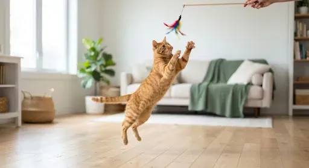
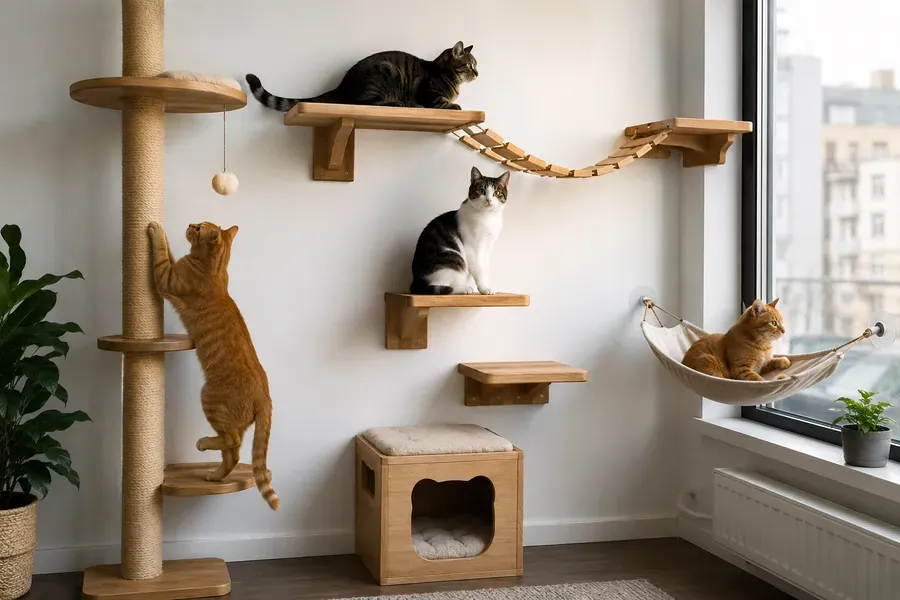
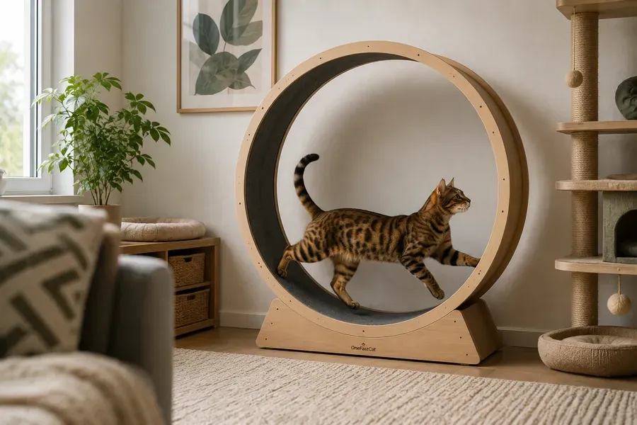
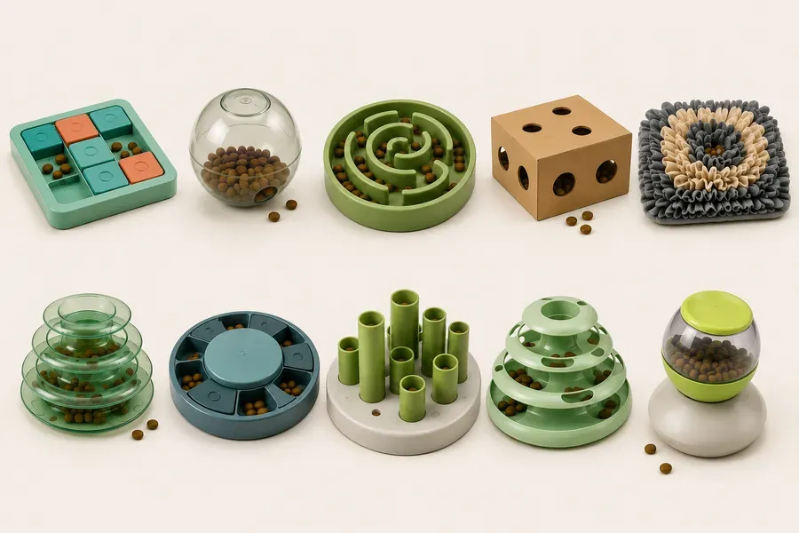

Активность
Движение — залог здоровья и долголетия вашей кошки. Создайте пространство для активной жизни.
1Ежедневные нагрузки
Регулярные игры (15–30 минут в день) помогают предотвратить ожирение и поддерживают мышечный тонус. Используйте махалки и лазерные указки для имитации охоты.
Чем полезно:
- снижает стресс;
- уменьшает ночную активность;
- предотвращает разрушительное поведение;
- помогает контролировать вес;
- удовлетворяет охотничий инстинкт.

2Вертикальные трассы
Использование кошачьих деревьев и настенных ступеней позволяет кошке реализовать инстинкт лазания и чувствовать себя в безопасности на высоте.
Что сюда входит:
- когтеточки высотой от 80 см;
- настенные полки;
- кошачьи деревья;
- гамаки на окне;
- мостики.

3Как понять, что кошке нужно больше игр
Если кошке скучно, она может:
- будить ночью;
- царапать мебель;
- громко мяукать;
- переедать;
- вылизывать себя до проплешин;
- нападать на ноги.
4Процесс игры
Общий процесс: охота → поимка → еда → отдых. То есть: поиграли, дали небольшое лакомство или корм, кошка отдыхает. Такой цикл максимально приближен к естественному поведению.
1. Поиск добычи — медленно двигайте игрушку, прячьте её за мебелью, дайте кошке возможность наблюдать и «выслеживать».
2. Преследование — меняйте скорость и направление, имитируйте поведение птицы или мыши, позволяйте кошке подкрадываться.
3. Поимка — не убирайте игрушку постоянно, дайте кошке несколько раз успешно поймать «добычу», позвольте удержать её лапами и покусать.
Как понять, что кошке достаточно:
- кошка спокойно отдыхает после игры;
- не требует постоянного внимания;
- поддерживает нормальный вес;
- меньше портит мебель;
- проявляет интерес к игрушкам.
5Беговое колесо
Помогает домашней кошке расходовать энергию, особенно если она живёт в квартире без свободного доступа к улице. Хорошее дополнение к играм, но не заменяет общение с хозяином.
Польза:
- снижает риск ожирения;
- поддерживает мышцы и суставы в тонусе;
- уменьшает скуку и стресс;
- полезно для активных пород (бенгальские, абиссинские, ориентальные, саванны).
Важно знать:
- не все кошки начинают пользоваться колесом сразу — некоторым требуется несколько недель на привыкание;
- никогда не заставляйте кошку бегать силой;
- поощряйте интерес лакомствами;
- колесо должно вращаться плавно и практически бесшумно.

6Интеллектуальная стимуляция
Пищевые головоломки и интерактивные игрушки заставляют кошку «добывать» еду, что имитирует естественное поведение и предотвращает скуку.
Примеры:
- банки со скользящими крышками;
- шарики-дозаторы с кормом;
- лабиринты для лакомств;
- коробки с отверстиями;
- нюхательные коврики.

7Советы
Совет
«Меняйте набор игрушек каждую неделю. Новизна — лучший стимул для кошачьего любопытства.»
Лучше две коротких игры по 10–15 минут, чем одна длинная — так кошка не успевает устать и сохраняет интерес.
Ещё в разделе
Информация в приложении собрана из открытых источников и опыта владельцев кошек. Она не заменяет консультацию и осмотр у ветеринара. Решения о здоровье и уходе за питомцем принимает владелец — при любых сомнениях обратитесь к ветеринару.
Всё это есть в приложении Cat First
Статьи, чек-листы и первая помощь — в телефоне, даже без интернета.